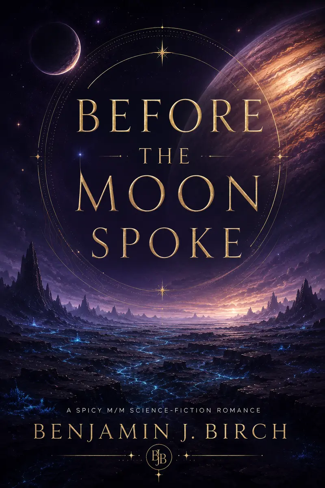
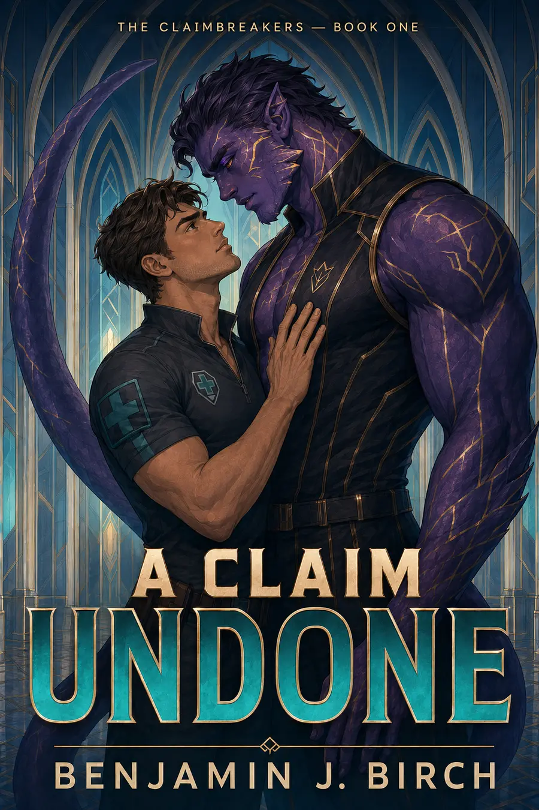
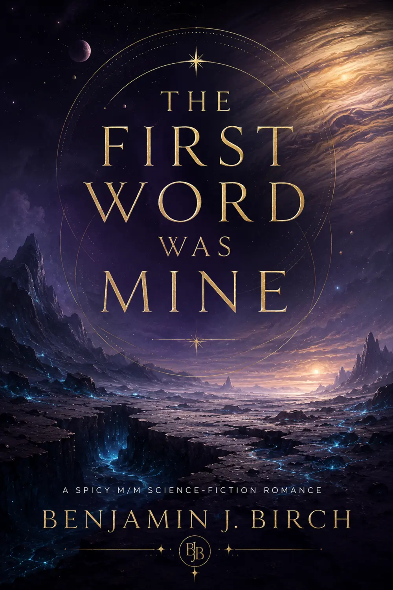
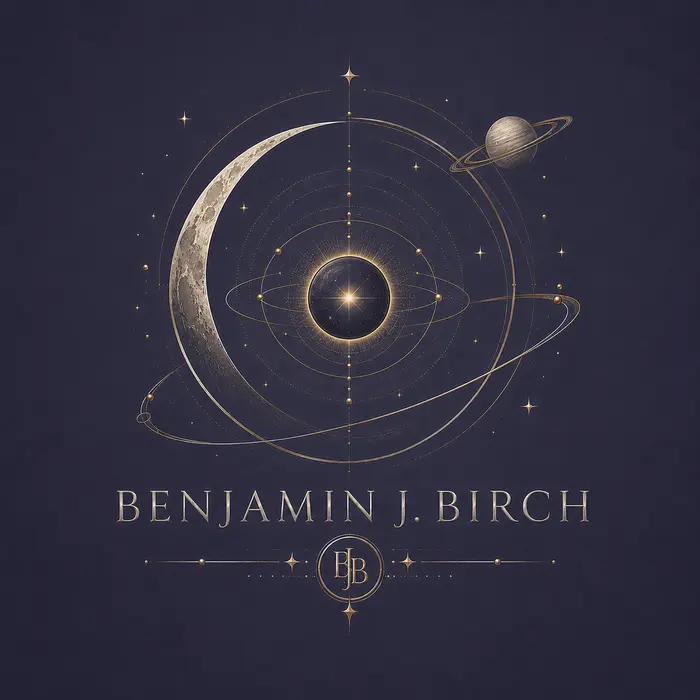

Available now

Voices of Nerith · Book 0.5
Before the Moon Spoke
A forbidden rescue becomes an intimate lesson in trust, choice, and what protection is allowed to mean.
Explore the seriesFor adult readers
Benjamin J. Birch writes explicit, open-door M/M romance. Please confirm that you are eighteen or older to enter.
Your choice will be remembered on this device.Benjamin J. Birch · Adult M/M science-fiction romance
Alien worlds, powerful devotion, explicit heat—and love stories built on choice.

Explicit open-door romance · For readers 18+
The collection
Alien worlds. Vulnerable men. Powerful protectors who learn that devotion means nothing without choice. Every story ends with a secure, hard-earned happily ever after.

Voices of Nerith · Book 0.5
A forbidden rescue becomes an intimate lesson in trust, choice, and what protection is allowed to mean.
Explore the series
Voices of Nerith · Book One
First contact was supposed to begin with language. Instead, it begins with one dangerous word—and two men deciding who gets to define it.
Explore the seriesThe Claimbreakers · Book One
The law calls Noah property. The alien commander who claims him intends to make him free.
Follow the releaseBegin the series
Language was supposed to make first contact possible. Instead, it revealed how easily care could become control—and how much courage it takes to choose trust across two worlds.
Private dispatches
Join Benjamin's reader list for release news, cover reveals, exclusive scenes, and a free copy of A Claim Renounced.
Advance readers
The ARC team receives selected books before publication in exchange for an honest review. Positive reviews are never required—reliability and thoughtful feedback matter most.

About the author
Stories about men finding home in places no human was ever meant to reach.
Benjamin J. Birch writes explicit adult M/M science-fiction romance about alien devotion, emotional vulnerability, and the difficult, beautiful work of choosing trust. His books pair unfamiliar worlds with intimate, character-driven love stories and secure, hard-earned happily ever afters.
He lives in London, UK.
Contact Benjamin